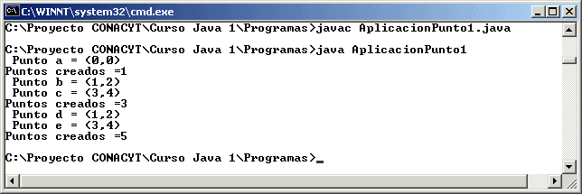

Módulo 5: Clases
y Objetos 
2. Variables de Clase, Variables de Instancia
Cuando se define una clase en POO, las variables que se definen dentro de ella son variables que tendrán diferentes valores con cada una de
las instancias que se generan al crear objetos nuevos de la clase
Una variable de instancia normalmente se define como privada, para que no se pueda modificar desde otra clase, solo a través de los
métodos (como lo vimos en la clase Punto con el getX() y el setX()), pero puede ser definida como pública y en ese caso no se requiere de
hacer uso de algún método para tomar su valor o modificarla (no es recomendable por el control de la variable por la misma clase).
Una variable de clase es aquella que solamente tiene un valor para toda la clase y debe ser definida como static (estática) para que no se cree
un nuevo valor con cada instancia.
La palabra static nos sirve para definir algo que no tiene que ver con las instancias de la clase, sino con toda la clase.
Cuando a alguna variable o a algún método le anteponemos la palabra static, esto define que será única (variable) o único (método) para toda la clase.
Las variables de instancia se utilizan a través de los métodos de la clase y estos son utilizados por objetos.
Es decir si tenemos la clase Cuenta, para utilizar la cuenta bancaria, con el constructor vacio Cuenta() y el Constructor(double saldo) con parámetro y definimos algunos objetoscomo lo siguiente:
Cuenta juan, pedro, luis;
juan = new Cuenta();
pedro = new Cuenta(1500.0);
luis = new Cuenta(3000.0);
Al usar la palabra new estamos creando un nuevo objeto de la clase y con esto estamos utilizando una nueva plantilla de variables de
instancia para el objeto creado, juan, pedro y luis son objetos nuevos de la clase Cuenta y por cada variable que tiene definida Cuenta en
la clase, cada uno de estos objetos podrá tener un valor diferente.
IMPORTANTE. Es sumamente importante que despues de declarar un objeto para una clase (Cuenta objeto;) hagamos la creación del
objeto, es decir utilicemos la instrucción new Cuenta() para ese objeto ( objeto = new Cuenta(); ) de otra manera el objeto no ha sido
creado y no se pueden utilizar los métodos, pues Java marcará el error NullPointerException.
En el ejemplo anterior, si tenemos el método setSaldo(double saldo), para modificar el saldo de la cuenta y el método getSaldo(), para acceder
al saldo de la cuenta, las siguientes pudieran ser instrucciones válidas:
luis.setSaldo(2200.0);
juan.setSaldo(350.50);
System.out.println("Saldo de pedro = " + pedro.getSaldo());
La manera de utilizar un método por un objeto es utilizando el formato objeto.método(parámetros); .
El siguiente es un ejemplo que muestra el uso de las variables de instancia y variables estáticas. Supongamos que tenemos en la clase Punto una variable de clase llamada puntos, esta variable nos servirá para saber el número de objetos que se han creado en la clase, la clase Punto a usar sería:
public class Punto {
private int x; // variable para la coordenada en x
private int y; // variable para la coordenada en y
private static int puntos=0;
public Punto() { // metodo para construir un objeto sin parámetros
x = 0;
y = 0;
puntos++;
}
public Punto(int x, int y) { // método para construir un objeto con parámetros enteros
this.x = x;
this.y = y;
puntos++;
}
public Punto(double x, double y) { // método para construir un objeto con parámetros double
this.x = (int) x;
this.y = (int) y;
puntos++;
}
public Punto(Punto obj) { // método para construir un objeto con parámetro objeto Punto
this.x = obj.x;
this.y = obj.y;
puntos++;
}
public int getX() { // método que te dá el valor de la coordenada x
return x;
}
public int getY() { // método que te dá el valor de la coordenada y
return y;
}
public void setX(int x) { // método que sirve para cambiar el valor de la coordenada x
this.x = x; // this se utiliza porque se esta utilizando (x) como parámetro y como
// variable de instancia y esto es para que no se confunda
}
public void setX(double x) { // método que sirve para cambiar el valor de la coordenada x
this.x = (int) x; // con un valor double
}
public void setY(int y) { // método que te sirve para cambiar el valor de la coordenada y
this.y = y; // this se utiliza porque se esta utilizando (y) como parámetro y como
// variable de instancia y esto es para que no se confunda
}
public void setY(double y) { // método que te sirve para cambiar el valor de la coordenada y
this.y = (int) y; // con un valor double
}
public String toString() { // para obtener un objeto Punto en formato String
return "(" + getX() + "," + getY() + ")";
}
public static int getPuntos() { // para acceder a la cantidad de objetos creados
return puntos;
}
}
Nota que la variable puntos y el método getPuntos() ambos fueron definidos como estáticos, esto implica que será un solo valor de esto
para toda la clase, no un valor diferente por instancia (objeto) creada de la clase. También observa como la variable puntos es incrementada
en uno cada vez que se crea un objeto de la clase (en cualquier constructor).
Esta clase la podemos utilizar con la aplicacion:
public class AplicacionPunto1 {
private static Punto a, b, c, d, e;
public static void main(String[] args) {
a = new Punto();
System.out.println(" Punto a = " + a.toString());
System.out.println("Puntos creados =" + Punto.getPuntos());
b = new Punto(1, 2);
c = new Punto(3.0, 4.0);
System.out.println(" Punto b = " + b.toString());
System.out.println(" Punto c = " + c.toString());
System.out.println("Puntos creados =" + Punto.getPuntos());
d = new Punto(b);
e = new Punto(c);
System.out.println(" Punto d = " + d.toString());
System.out.println(" Punto e = " + e.toString());
System.out.println("Puntos creados =" + Punto.getPuntos());
}
}
El resultado que nos mostraría sería:

Observamos como es que despues de crear el elemento a y desplegar el valor de puntos creados, solo despliega 1, después al crear b y c, se tienen 3 y al final ya se tienen los 5.
También es importante hacer notar que el método getPuntos() fué utilizado a través de la clase Punto, ya que es un método estático y debe
ser utilizado a través de la clase.
Lo anterior no es un requisito, pero es lo más común, ya que podemos tener una llamada a un método estático, pero a traves de un objeto de
la clase y funciona exactamente igual, veamos ahora una aplicación que está ligeramente cambiada, pero nos da el mismo resultado que la
anterior:
public class AplicacionPunto1 {
private static Punto a, b, c, d, e;
public static void main(String[] args) {
a = new Punto();
System.out.println(" Punto a = " + a.toString());
System.out.println("Puntos creados =" + a.getPuntos());
b = new Punto(1, 2);
c = new Punto(3.0, 4.0);
System.out.println(" Punto b = " + b.toString());
System.out.println(" Punto c = " + c.toString());
System.out.println("Puntos creados =" + b.getPuntos());
d = new Punto(b);
e = new Punto(c);
System.out.println(" Punto d = " + d.toString());
System.out.println(" Punto e = " + e.toString());
System.out.println("Puntos creados =" + e.getPuntos());
}
}
En esta aplicación podemos observar como es que el método estático getPuntos() también puede ser usado a través de un objeto de la clase,
pero es importante recordar que es una sola variable para toda la clase.
Recolección de Basura
En Java cada vez que utilizamos la palabra new, estamos creando una nueva referencia a memoria y mas tarde cuando ya no la usemos, no necesitamos borrarla (como se haría normalmente en C++), ya que Java automáticamente los borra debido a una clase llamada
GarbageCollector, la cual se encarga de estar revisando los objetos que ya son obsoletos y no se vuelven a utilizar.
La recolección de memoria es una facilidad que permite a Java reusar la memoria que se tenia bloqueada para el uso de algún dato primitivo (int, double, etc) o algún objeto.
Gracias a esta facilidad de Java, el programador se olvida de tener que estar liberando la memoria y se enfoca más a la mejor utilización de las variables y objetos de la clase.
1. Toma la clase Cuenta referenciada en pasadas secciones y crea en ella una variable estática cuentas y un método estático getCuentas() que
te de el valor de cuentas, para que sepas cuantos objetos Cuenta han sido creados en la clase.
2. Escribe una aplicación que muestre el uso de la clase Cuenta que modificaste.
http://java.sun.com/docs/books/tutorial/java/concepts/class.html